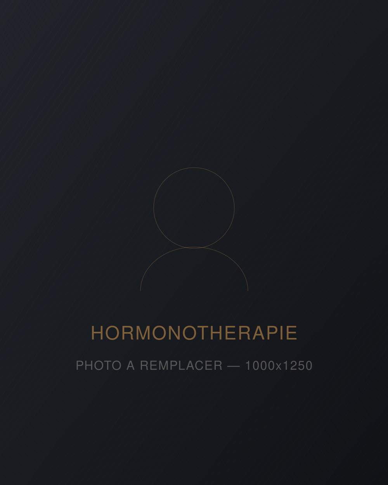
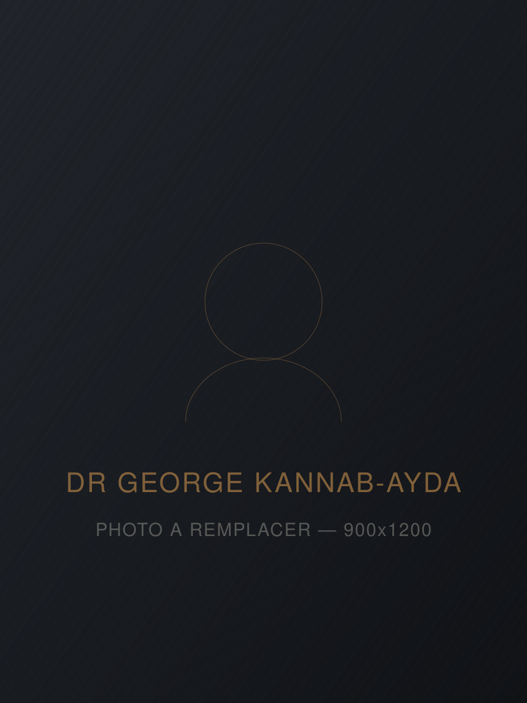

Service 01 — Santé hormonale
Hormonothérapie
TRT
Fatigue qui ne part pas, libido en berne, concentration qui s'effrite, masse musculaire qui fond malgré l'entraînement. Ce n'est pas nécessairement l'âge. Ça se mesure — et ça se traite.

Le déficit en testostérone
Quatre hommes sur dix
après 45 ans
La testostérone ne sert pas qu'à la libido. Elle intervient dans le métabolisme, la densité osseuse, la masse musculaire, la qualité du sommeil, l'humeur et la capacité de concentration. Quand elle baisse, ce n'est pas un symptôme isolé qui apparaît — c'est un ensemble diffus qu'on met souvent sur le compte du stress ou du travail.
Le problème, c'est qu'on peut vivre des années avec un taux bas sans jamais le faire mesurer. Une simple prise de sang suffit à savoir.
- Fatigue chronique — même après une bonne nuit de sommeil
- Baisse de la libido et difficultés érectiles
- Perte de masse musculaire malgré l'entraînement
- Gain de gras abdominal difficile à déloger
- Brouillard mental, irritabilité, motivation en baisse
- Sommeil de moins bonne qualité, récupération plus lente
Ces symptômes peuvent aussi relever d'autres causes — thyroïde, apnée du sommeil, dépression, carences, effets d'une médication. C'est précisément pourquoi l'évaluation commence par un bilan, pas par une ordonnance.
Notre approche
Pas un formulaire en ligne.
Un médecin.
Les plateformes web qui prescrivent de la testostérone après un questionnaire de cinq minutes existent. Ce n'est pas ce qu'on fait ici.
Approche globale
La santé masculine ne se réduit pas à un chiffre sur un rapport de laboratoire. Sommeil, stress, composition corporelle, médication en cours : tout entre dans l'équation.
Programme personnalisé
Le dosage, la forme d'administration et la fréquence sont établis selon vos résultats et votre profil — pas selon un protocole standard appliqué à tout le monde.
Objectifs définis avec vous
Retrouver de l'énergie, améliorer la composition corporelle, régler un problème de libido : on ne vise pas la même chose pour tous, donc on ne mesure pas le succès de la même façon.
Suivi réel
Bilans de contrôle, ajustements de dosage, surveillance des effets. Un traitement hormonal sans suivi n'est pas un traitement — c'est un risque.
Comment ça fonctionne
Du premier appel
au premier suivi
-
Questionnaire & prise de sang
On documente vos symptômes et on vous remet la demande d'analyse sanguine — profil hormonal complet. Vous choisissez le laboratoire qui vous convient ; les résultats nous reviennent directement. Compris dans la consultation initiale.
-
Analyse des résultats
Le médecin interprète vos taux hormonaux à la lumière de vos symptômes et de vos antécédents, puis détermine si l'hormonothérapie est indiquée dans votre cas.
-
Consultation & plan de traitement
Rencontre en clinique ou en télémédecine : on passe en revue les résultats, les options, les bénéfices attendus, les risques et les limites. Vous repartez avec un plan écrit.
-
Traitement & suivis
Début du protocole, puis suivis planifiés pour ajuster le dosage et contrôler les paramètres sanguins. Le tarif de suivi est de 175 $ par rendez-vous.
Tarifs
Deux prix.
Aucune surprise.
Pas de forfait à trois paliers, pas de frais de dossier ajoutés en fin de parcours. Ce que vous voyez est ce que vous payez.
Consultation initiale
+ évaluation
Pour tout homme qui veut savoir où il en est et, s'il est admissible, démarrer un traitement.
325$Une seule fois
- Questionnaire de symptômes détaillé
- Demande d'analyse sanguine — profil hormonal
- Analyse sanguine incluse, aucun frais séparé
- Interprétation des résultats par le médecin
- Évaluation de l'admissibilité
- Consultation et plan de traitement personnalisé
Consultation
de suivi
Pour les patients déjà en traitement chez nous. La fréquence est établie par le médecin selon votre protocole.
175$Par rendez-vous
- Revue des bilans de contrôle
- Ajustement du dosage au besoin
- Surveillance des effets indésirables
- Renouvellement de l'ordonnance
- Réponses à vos questions
Vous suivez déjà
une TRT ailleurs ?
Deuxième avis sur vos taux hormonaux et votre protocole actuel, ou transfert de dossier vers notre clinique.
175$Consultation
- Révision de vos bilans récents
- Analyse du protocole en cours
- Recommandations d'ajustement
- Prise en charge si vous souhaitez transférer
- Si un nouveau bilan complet est requis, l'évaluation initiale à 325 $ s'applique.
Les tarifs de consultation ne comprennent pas le coût de la médication prescrite, qui varie selon la forme choisie et peut être partiellement couvert par votre régime d'assurance. Taxes applicables le cas échéant.

Qui vous suit
Dr George
Kannab-Ayda
Médecin et pédiatre — médecine esthétique
C'est lui qui pilote notre programme d'hormonothérapie. Médecin et pédiatre pratiquant à Montréal, il exerce également en médecine esthétique, avec un intérêt marqué pour le rajeunissement du visage, les traitements injectables, le PRP, les traitements au laser et les soins esthétiques non chirurgicaux.
Son approche repose sur quatre principes : une évaluation médicale personnalisée, la sécurité du patient, le consentement éclairé, et un plan de traitement adapté aux besoins et au profil médical de chaque personne.
Avant tout traitement, une consultation médicale permet d'évaluer les attentes, les contre-indications, les risques, les limites et les options appropriées. Il privilégie une pratique professionnelle, individualisée et orientée vers des résultats naturels.
Questions fréquentes
L'hormonothérapie,
sans zone grise
Non. Plusieurs cliniques facturent la demande d'analyse sanguine séparément, souvent autour de 50 $. Chez nous, elle est comprise dans la consultation initiale de 325 $, tout comme l'interprétation des résultats par le médecin.
L'admissibilité se détermine à partir de vos taux hormonaux, de vos symptômes et de vos antécédents médicaux. Certaines conditions — cancer de la prostate ou du sein actif, projet de paternité à court terme, hématocrite élevé, apnée du sommeil non traitée, insuffisance cardiaque non contrôlée — peuvent contre-indiquer ou repousser le traitement. Le médecin en discute avec vous à partir de votre dossier réel, pas d'un profil type.
Ça varie. La libido et l'énergie sont généralement les premières à bouger, souvent dans les premières semaines. L'humeur et la qualité du sommeil suivent. Les changements de composition corporelle — masse musculaire, gras abdominal — se mesurent plutôt sur plusieurs mois, et seulement si l'entraînement et l'alimentation suivent.
Dans la majorité des cas, oui : la TRT compense une production insuffisante, elle ne la relance pas. Si vous cessez, les taux redescendent généralement à leur niveau de départ et les symptômes reviennent. C'est une décision à prendre en connaissance de cause — et c'est pour ça qu'on en parle avant de commencer, pas après.
Les plus fréquemment rapportés : hausse de l'hématocrite, acné, rétention d'eau, sensibilité mammaire, changements d'humeur, et une baisse de la fertilité pouvant être importante. Le suivi sanguin régulier sert précisément à détecter ces effets tôt et à ajuster le protocole. Si vous envisagez d'avoir des enfants, dites-le dès la première consultation : cela change les options.
Oui. La consultation initiale et les suivis peuvent se tenir en télémédecine ou en personne, selon votre préférence et selon ce que votre dossier exige. La prise de sang, elle, se fait au laboratoire de votre choix.
Cette page est informative et ne constitue pas un avis médical. L'hormonothérapie de remplacement de la testostérone est un traitement médical qui comporte des bénéfices et des risques. Aucun traitement n'est amorcé sans évaluation médicale complète et consentement éclairé.
Première étape
Arrêtez de deviner.
Faites-le mesurer.
Consultation initiale à 325 $, bilan sanguin compris. Si vous n'êtes pas admissible, on vous le dira — et on vous expliquera pourquoi.